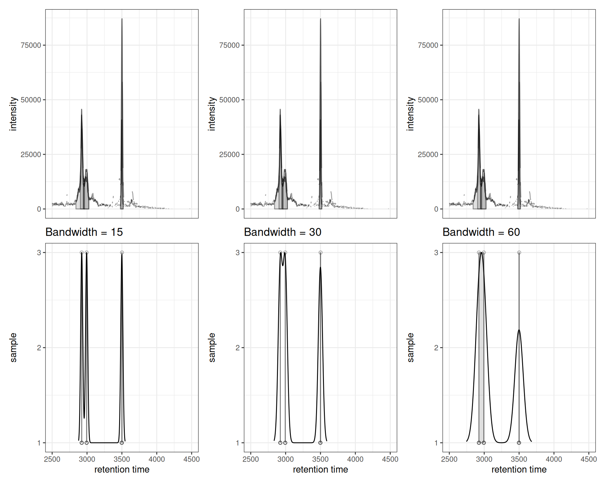
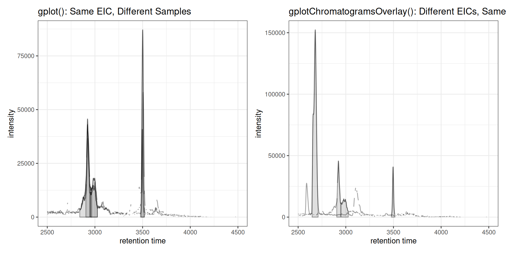
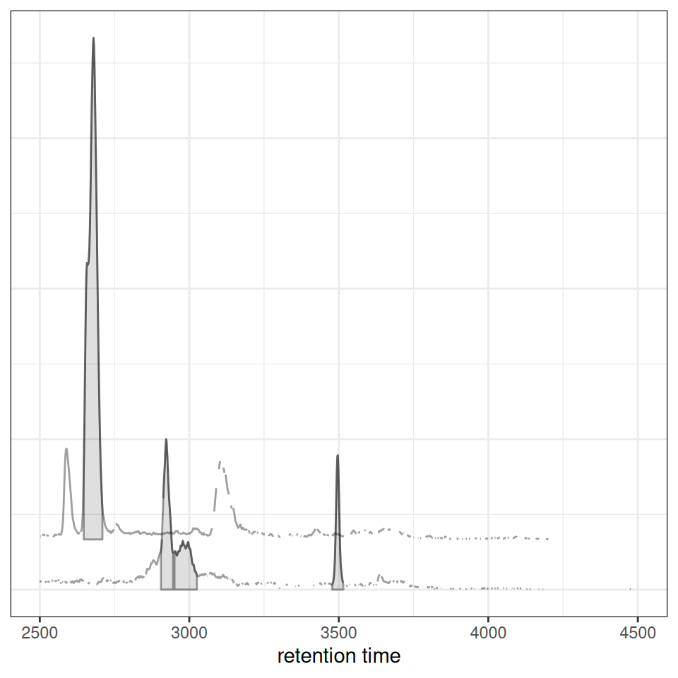
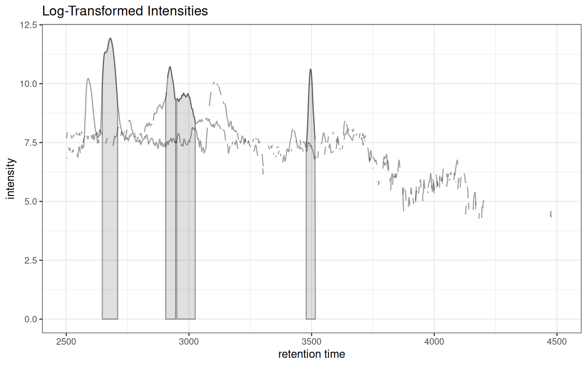
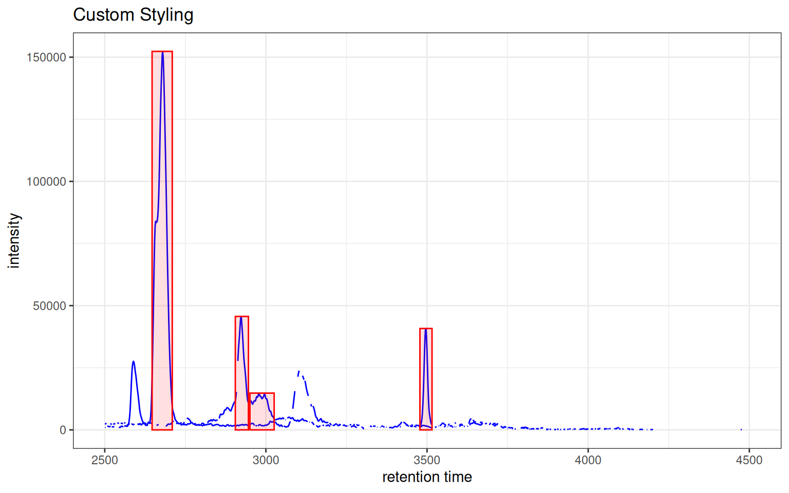

Introduction
This vignette covers the third step in the XCMS metabolomics workflow: peak correspondence (also called peak grouping or alignment). After detecting peaks in individual samples, these functions help you:
- Optimize parameters for grouping peaks across samples
- Visualize how peaks will be grouped into features
- Compare multiple extracted ion chromatograms (EICs)
- Assess correspondence quality
XCMS Workflow Context
┌─────────────────────────────────────┐
│ 1. Raw Data Visualization │
│ 2. Peak Detection │
├─────────────────────────────────────┤
│ 3. PEAK CORRESPONDENCE ← YOU ARE HERE
├─────────────────────────────────────┤
│ 4. Retention Time Alignment │
│ 5. Feature Grouping │
└─────────────────────────────────────┘What is Peak Correspondence?
Peak correspondence groups chromatographic peaks detected across different samples that represent the same compound. The goal is to create features - groups of peaks with similar m/z and retention time that likely derive from the same molecule.
Functions Covered
-
gplotChromPeakDensity(): Visualize peak density for optimizing correspondence parameters -
gplotChromatogramsOverlay(): Create overlay plots of multiple extracted ion chromatograms
Setup
Data Preparation
We’ll use pre-processed test data from XCMS for faster execution:
# Load pre-processed data with detected peaks
xdata <- loadXcmsData("faahko_sub2")
# Check data
cat("Samples:", length(fileNames(xdata)), "\n")
#> Samples: 3
cat("Total peaks detected:", nrow(chromPeaks(xdata)), "\n")
#> Total peaks detected: 248Part 1: Peak Density Visualization
gplotChromPeakDensity(): Parameter Optimization
The gplotChromPeakDensity() function helps optimize peak density correspondence parameters by visualizing how peaks would be grouped.
Basic Usage
# Extract chromatogram for visualization
chr <- chromatogram(xdata, mz = c(305.05, 305.15))
# Create parameter object
prm <- PeakDensityParam(sampleGroups = rep(1, 3), bw = 30)
# Visualize peak density
gplotChromPeakDensity(chr, param = prm)
The plot shows:
- Upper panel: Overlaid chromatograms from all samples
- Lower panel: Peak positions as points with density curve and feature grouping regions (grey rectangles)
Optimizing Bandwidth Parameter
The bandwidth (bw) parameter controls the smoothing of the density estimate. Larger values group more distant peaks together:
prm_small <- PeakDensityParam(sampleGroups = rep(1, 3), bw = 15)
prm_medium <- PeakDensityParam(sampleGroups = rep(1, 3), bw = 30)
prm_large <- PeakDensityParam(sampleGroups = rep(1, 3), bw = 60)
p1 <- gplotChromPeakDensity(chr, param = prm_small) +
ggtitle("Bandwidth = 15")
p2 <- gplotChromPeakDensity(chr, param = prm_medium) +
ggtitle("Bandwidth = 30")
p3 <- gplotChromPeakDensity(chr, param = prm_large) +
ggtitle("Bandwidth = 60")
p1 | p2 | p3
Interpretation: - Small bandwidth (15): More sensitive, creates more feature groups, may split real features - Medium bandwidth (30): Balanced approach - Large bandwidth (60): Less sensitive, merges nearby peaks, may combine distinct features
Showing Actual Correspondence Results
After running correspondence analysis, you can visualize the actual feature grouping by setting simulate = FALSE:
# Perform correspondence
xdata_grouped <- groupChromPeaks(xdata, param = PeakDensityParam(
sampleGroups = rep(1, 3),
minFraction = 0.4,
bw = 30
))
# Extract chromatogram again (now with correspondence info)
chr_grouped <- chromatogram(xdata_grouped, mz = c(305.05, 305.15))
# Plot actual correspondence results
gplotChromPeakDensity(chr_grouped, simulate = FALSE) +
ggtitle("Actual Correspondence Results")
Feature Annotations
When
simulate = FALSE, the plot shows the actual feature groupings determined by the correspondence algorithm. Vertical dashed lines indicate the median retention time for each detected feature across samples.
Interactive Exploration
p <- gplotChromPeakDensity(chr, param = prm)
ggplotly(p)Part 2: Chromatogram Overlay Visualization
gplotChromatogramsOverlay(): Comparing Multiple EICs
The gplotChromatogramsOverlay() function overlays different EICs (rows) from the same sample (column) in one plot.
Understanding the Difference
Key Concept
gplot(XChromatogram): Overlays the SAME m/z range across DIFFERENT samplesgplotChromatogramsOverlay(): Overlays DIFFERENT m/z ranges within the SAME sample
Single Sample: Multiple EICs Overlaid
# Extract multiple EICs from ONE sample
chr_multi <- chromatogram(xdata[1,], mz = rbind(
c(305.05, 305.15),
c(344.0, 344.2)
))
gplotChromatogramsOverlay(chr_multi, main = "Sample 1")
Multiple Samples: Faceted Layout
When you have multiple samples, gplotChromatogramsOverlay() creates a faceted plot with one panel per sample:
# Extract multiple EICs from ALL samples
chr_all <- chromatogram(xdata, mz = rbind(
c(305.05, 305.15),
c(344.0, 344.2)
))
gplotChromatogramsOverlay(chr_all,
main = c("Sample 1", "Sample 2", "Sample 3"))
Contrast: gplot() vs gplotChromatogramsOverlay()
Here’s a direct comparison showing the key difference:
# LEFT: gplot() - same EIC across different samples
chr_one_eic <- chromatogram(xdata, mz = c(305.05, 305.15))
p_left <- gplot(chr_one_eic) +
ggtitle("gplot(): Same EIC, Different Samples")
# RIGHT: gplotChromatogramsOverlay() - different EICs within one sample
chr_multi_eic <- chromatogram(xdata[1,], mz = rbind(
c(305.05, 305.15),
c(344.0, 344.2)
))
p_right <- gplotChromatogramsOverlay(chr_multi_eic) +
ggtitle("gplotChromatogramsOverlay(): Different EICs, Same Sample")
p_left | p_right
Stacked Visualization
For better visual separation, chromatograms can be vertically offset:
gplotChromatogramsOverlay(chr_multi, stacked = 0.1, main = "Sample 1")
Intensity Transformation
Apply transformations for better visualization of low-intensity features:
gplotChromatogramsOverlay(chr_multi, transform = log1p, main = "Sample 1") +
ggtitle("Log-Transformed Intensities")
Custom Colors and Peak Styles
gplotChromatogramsOverlay(
chr_multi,
col = "blue",
peakCol = "red",
peakBg = "#ff000020",
peakType = "rectangle",
main = "Sample 1"
) + ggtitle("Custom Styling")
Complete Workflow Example
Here’s a complete workflow demonstrating how these functions work together for correspondence optimization:
# 1. Extract chromatogram for one m/z
chr_workflow <- chromatogram(xdata, mz = c(344.0, 344.2))
# 2. Check peak density with different parameters
prm1 <- PeakDensityParam(sampleGroups = rep(1, 3), bw = 20)
prm2 <- PeakDensityParam(sampleGroups = rep(1, 3), bw = 40)
p1 <- gplotChromPeakDensity(chr_workflow, param = prm1) +
ggtitle("Peak Density (bw=20)")
p2 <- gplotChromPeakDensity(chr_workflow, param = prm2) +
ggtitle("Peak Density (bw=40)")
# 3. Overlay multiple EICs from one sample
chr_overlay <- chromatogram(xdata[1,], mz = rbind(
c(305.05, 305.15),
c(344.0, 344.2)
))
p3 <- gplotChromatogramsOverlay(chr_overlay, main = "Sample 1") +
ggtitle("Multiple EICs Overlaid")
# 4. Individual chromatogram detail
p4 <- gplot(chr_workflow[1, 1]) +
ggtitle("Sample 1 Detail (m/z 344)")
# Combine all plots
(p1 | p2) / p3 / p4
Summary
Functions Covered
| Function | Purpose | What it Overlays |
|---|---|---|
gplotChromPeakDensity() |
Optimize correspondence parameters | Density of peaks across samples |
gplotChromatogramsOverlay() |
Compare different EICs within sample | DIFFERENT m/z, SAME sample |
gplot(XChromatogram) |
Compare same EIC across samples | SAME m/z, DIFFERENT samples |
Use Cases
-
Parameter optimization:
gplotChromPeakDensity()helps tune correspondence parameters -
Quality control:
gplotChromatogramsOverlay()reveals co-eluting compounds within samples -
Sample comparison:
gplot()shows retention time shifts and intensity variations between samples
Next Steps
After optimizing and performing peak correspondence, proceed to:
→ Step 4: Retention Time Alignment - Correct retention time shifts between samples
Comparison with Original XCMS
Original XCMS
plotChromPeakDensity(chr, param = prm)
xcmsVis ggplot2
gplotChromPeakDensity(chr, param = prm)
Session Info
sessionInfo()
#> R version 4.5.2 (2025-10-31)
#> Platform: x86_64-pc-linux-gnu
#> Running under: Ubuntu 24.04.3 LTS
#>
#> Matrix products: default
#> BLAS: /usr/lib/x86_64-linux-gnu/openblas-pthread/libblas.so.3
#> LAPACK: /usr/lib/x86_64-linux-gnu/openblas-pthread/libopenblasp-r0.3.26.so; LAPACK version 3.12.0
#>
#> locale:
#> [1] LC_CTYPE=C.UTF-8 LC_NUMERIC=C LC_TIME=C.UTF-8
#> [4] LC_COLLATE=C.UTF-8 LC_MONETARY=C.UTF-8 LC_MESSAGES=C.UTF-8
#> [7] LC_PAPER=C.UTF-8 LC_NAME=C LC_ADDRESS=C
#> [10] LC_TELEPHONE=C LC_MEASUREMENT=C.UTF-8 LC_IDENTIFICATION=C
#>
#> time zone: UTC
#> tzcode source: system (glibc)
#>
#> attached base packages:
#> [1] stats graphics grDevices utils datasets methods base
#>
#> other attached packages:
#> [1] xcmsVis_0.99.22 patchwork_1.3.2 plotly_4.11.0
#> [4] ggplot2_4.0.0 xcms_4.8.0 BiocParallel_1.44.0
#>
#> loaded via a namespace (and not attached):
#> [1] DBI_1.2.3 rlang_1.1.6
#> [3] magrittr_2.0.4 clue_0.3-66
#> [5] MassSpecWavelet_1.76.0 matrixStats_1.5.0
#> [7] compiler_4.5.2 vctrs_0.6.5
#> [9] reshape2_1.4.4 stringr_1.6.0
#> [11] ProtGenerics_1.42.0 pkgconfig_2.0.3
#> [13] MetaboCoreUtils_1.18.0 crayon_1.5.3
#> [15] fastmap_1.2.0 XVector_0.50.0
#> [17] labeling_0.4.3 rmarkdown_2.30
#> [19] preprocessCore_1.72.0 purrr_1.2.0
#> [21] xfun_0.54 MultiAssayExperiment_1.36.0
#> [23] jsonlite_2.0.0 progress_1.2.3
#> [25] DelayedArray_0.36.0 parallel_4.5.2
#> [27] prettyunits_1.2.0 cluster_2.1.8.1
#> [29] R6_2.6.1 stringi_1.8.7
#> [31] RColorBrewer_1.1-3 limma_3.66.0
#> [33] GenomicRanges_1.62.0 Rcpp_1.1.0
#> [35] Seqinfo_1.0.0 SummarizedExperiment_1.40.0
#> [37] iterators_1.0.14 knitr_1.50
#> [39] IRanges_2.44.0 BiocBaseUtils_1.12.0
#> [41] Matrix_1.7-4 igraph_2.2.1
#> [43] tidyselect_1.2.1 abind_1.4-8
#> [45] yaml_2.3.10 doParallel_1.0.17
#> [47] codetools_0.2-20 affy_1.88.0
#> [49] lattice_0.22-7 tibble_3.3.0
#> [51] plyr_1.8.9 Biobase_2.70.0
#> [53] withr_3.0.2 S7_0.2.0
#> [55] evaluate_1.0.5 Spectra_1.20.0
#> [57] pillar_1.11.1 affyio_1.80.0
#> [59] BiocManager_1.30.26 MatrixGenerics_1.22.0
#> [61] foreach_1.5.2 stats4_4.5.2
#> [63] MSnbase_2.36.0 MALDIquant_1.22.3
#> [65] ncdf4_1.24 generics_0.1.4
#> [67] S4Vectors_0.48.0 hms_1.1.4
#> [69] scales_1.4.0 MsExperiment_1.12.0
#> [71] glue_1.8.0 MsFeatures_1.18.0
#> [73] lazyeval_0.2.2 tools_4.5.2
#> [75] mzID_1.48.0 data.table_1.17.8
#> [77] QFeatures_1.20.0 vsn_3.78.0
#> [79] mzR_2.44.0 fs_1.6.6
#> [81] XML_3.99-0.20 grid_4.5.2
#> [83] impute_1.84.0 tidyr_1.3.1
#> [85] crosstalk_1.2.2 MsCoreUtils_1.21.0
#> [87] PSMatch_1.14.0 cli_3.6.5
#> [89] viridisLite_0.4.2 S4Arrays_1.10.0
#> [91] dplyr_1.1.4 AnnotationFilter_1.34.0
#> [93] pcaMethods_2.2.0 gtable_0.3.6
#> [95] digest_0.6.37 BiocGenerics_0.56.0
#> [97] SparseArray_1.10.1 htmlwidgets_1.6.4
#> [99] farver_2.1.2 htmltools_0.5.8.1
#> [101] lifecycle_1.0.4 httr_1.4.7
#> [103] statmod_1.5.1 MASS_7.3-65